1 Forest Lab Data Analysis: Results
See below for results from the forest lab field study. When answering the questions on page 27 of your lab manual, make sure your interpretations align with what's shown here.
1.1 Processing and analytical code
Important: This code must be evaluated prior to running any other code in this document. Note that I used read_excel to read in data directly from where it is located on my computer. To reproduce these analyses you will need to alter those lines to match where the data is located on your own computer.
# read in libraries
library(readxl)
library(tidyverse)
#read in data - change these lines to reflect where the data are stored on your computer
env = read_excel("/users/seanhardison/desktop/ecology lab/environmental_data.xlsx")
forest = read_excel("/users/seanhardison/desktop/ecology lab/forest_lab.xlsx")
#summarise data
summary_env = env %>%
#create new column for slope angle
mutate(slope_angle = atan(Rise/Run) * 180/pi) %>%
#Tell R to group by Site for finding mean and standard deviation
group_by(Site) %>%
#Find the mean and standard deviation by site
summarise(mean_slope_angle = mean(slope_angle, na.rm = T),
sd_slope_angle = sd(slope_angle, na.rm = T),
mean_thickness = mean(`Horizon Thickness`),
sd_thickness = sd(`Horizon Thickness`),
mean_moisture = mean(`Soil Moisture`),
sd_moisture = sd(`Soil Moisture`),
mean_temperature = mean(`Soil Temperature`),
sd_temperature = sd(`Soil Temperature`))1.2 Environmental data: barplots (Q1)
Slope angle
ggplot(summary_env) +
geom_bar(aes(x = Site, y = mean_slope_angle), stat = "identity") +
geom_errorbar(aes(x = Site, ymin = mean_slope_angle - sd_slope_angle,
ymax = mean_slope_angle + sd_slope_angle),
width = 0.25) +
ylab("Mean slope angle (°)") +
theme_bw()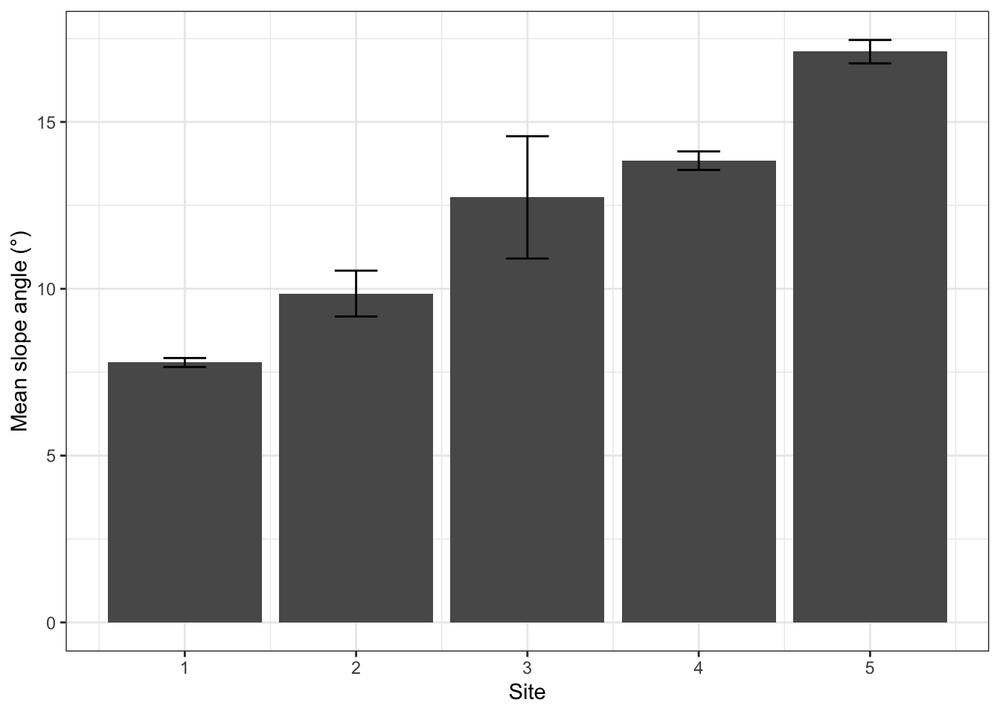
Horizon thickness
ggplot(summary_env) +
geom_bar(aes(x = Site, y = mean_thickness), stat = "identity") +
geom_errorbar(aes(x = Site, ymin = mean_thickness - sd_thickness,
ymax = mean_thickness + sd_thickness),
width = 0.25) +
ylab("Mean horizon thickness (cm)") +
theme_bw()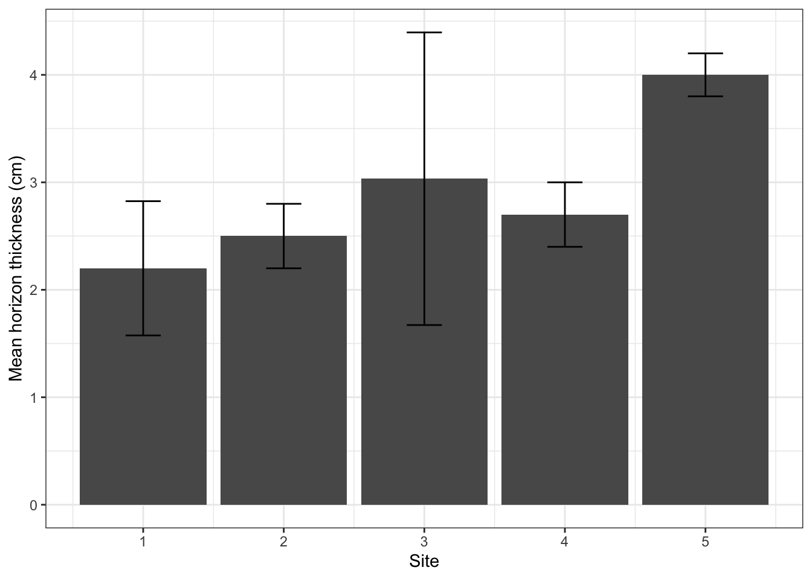
Soil temperature
ggplot(summary_env) +
geom_bar(aes(x = Site, y = mean_temperature), stat = "identity") +
geom_errorbar(aes(x = Site, ymin = mean_temperature - sd_temperature,
ymax = mean_temperature + sd_temperature),
width = 0.25) +
ylab("Mean soil temperature (°F)") +
theme_bw()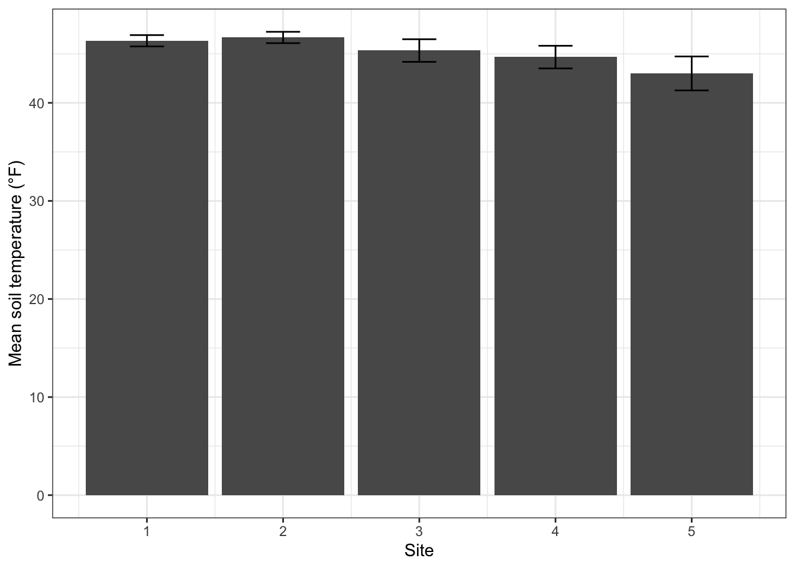
Soil moisture
ggplot(summary_env) +
geom_bar(aes(x = Site, y = mean_moisture), stat = "identity") +
geom_errorbar(aes(x = Site, ymin = mean_moisture - sd_moisture,
ymax = mean_moisture + sd_moisture),
width = 0.25) +
ylab("Mean soil moisture (%)") +
theme_bw()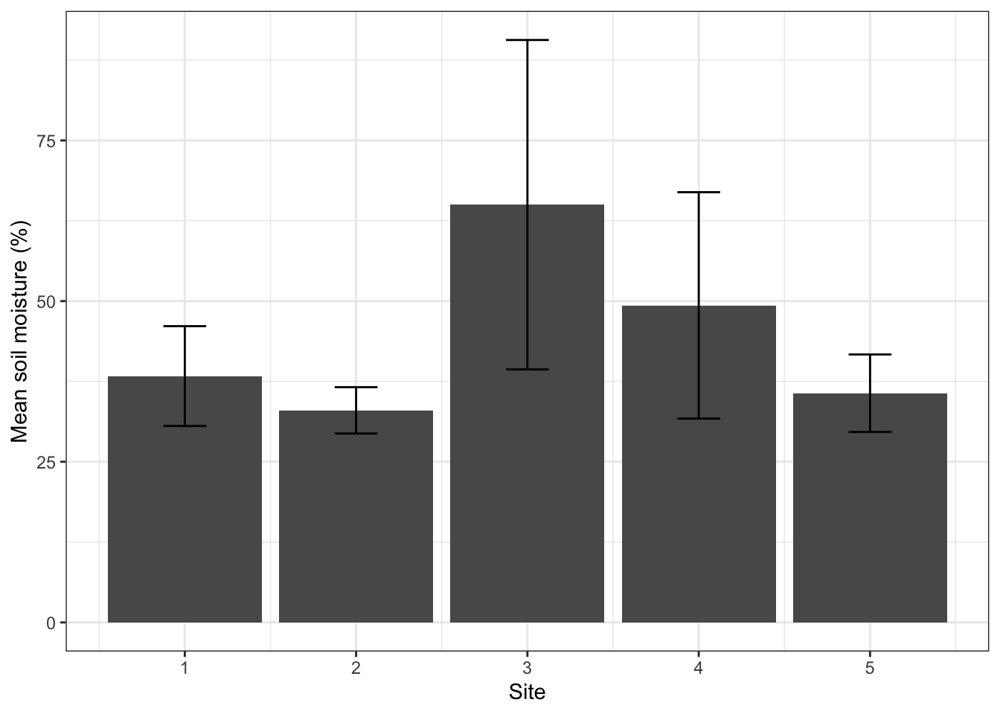
1.3 Environmental data: linear models and scatter plots (Q2)
Lines of best fit are shown on plots when significant relationships (P < 0.05) are identified using linear models.
soil temperature ~ soil moisture
ggplot(summary_env) +
geom_point(aes(x = mean_moisture, y = mean_temperature)) +
ylab("Mean temperature (°F)") +
xlab("Mean soil moisture (%)")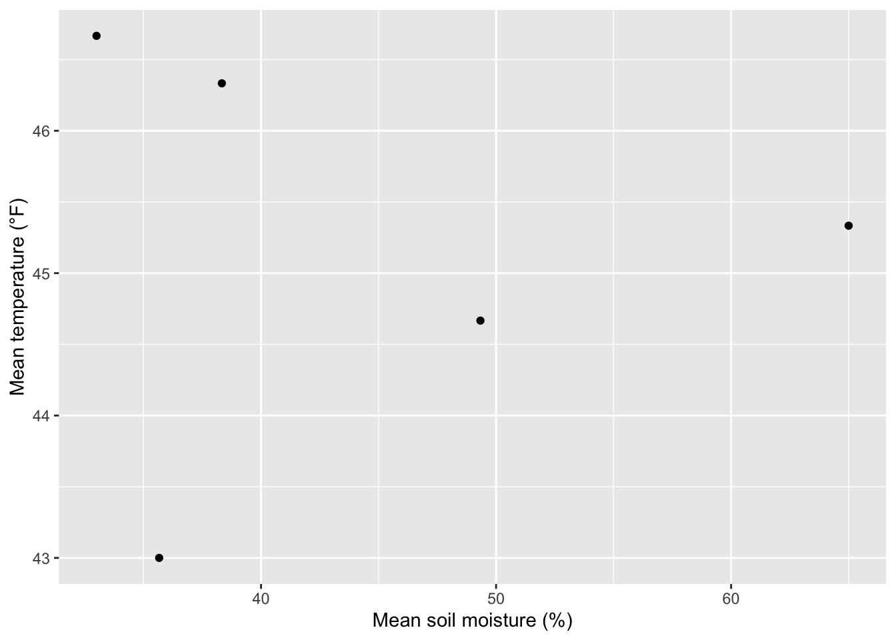
temp_moisture_mod = lm(mean_temperature ~ mean_moisture, data = summary_env)
summary(temp_moisture_mod)##
## Call:
## lm(formula = mean_temperature ~ mean_moisture, data = summary_env)
##
## Residuals:
## 1 2 3 4 5
## 1.0967 1.3972 0.2612 -0.5021 -2.2531
##
## Coefficients:
## Estimate Std. Error t value Pr(>|t|)
## (Intercept) 45.473075 2.940404 15.465 0.000587 ***
## mean_moisture -0.006169 0.064197 -0.096 0.929507
## ---
## Signif. codes: 0 '***' 0.001 '**' 0.01 '*' 0.05 '.' 0.1 ' ' 1
##
## Residual standard error: 1.688 on 3 degrees of freedom
## Multiple R-squared: 0.003068, Adjusted R-squared: -0.3292
## F-statistic: 0.009234 on 1 and 3 DF, p-value: 0.9295soil moisture ~ horizon thickness
ggplot(summary_env) +
geom_point(aes(x = mean_thickness, y = mean_moisture)) +
ylab("Mean temperature (°F)") +
xlab("Mean horizon thickness (cm)")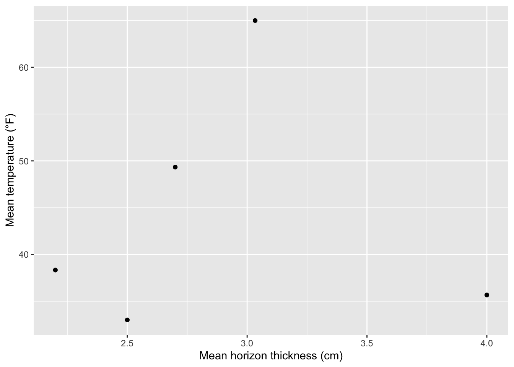
moist_hor_thickness_mod = lm(mean_moisture ~ mean_thickness, data = summary_env)
summary(moist_hor_thickness_mod)##
## Call:
## lm(formula = mean_moisture ~ mean_thickness, data = summary_env)
##
## Residuals:
## 1 2 3 4 5
## -5.593 -11.075 20.661 5.159 -9.152
##
## Coefficients:
## Estimate Std. Error t value Pr(>|t|)
## (Intercept) 42.8344 32.3667 1.323 0.278
## mean_thickness 0.4962 10.9631 0.045 0.967
##
## Residual standard error: 15.18 on 3 degrees of freedom
## Multiple R-squared: 0.0006823, Adjusted R-squared: -0.3324
## F-statistic: 0.002048 on 1 and 3 DF, p-value: 0.9667soil temperature ~ horizon thickness
ggplot(summary_env) +
geom_point(aes(x = mean_thickness, y = mean_temperature)) +
ylab("Mean temperature (°F)") +
xlab("Mean horizon thickness (cm)") +
geom_smooth(aes(x = mean_thickness, y = mean_temperature), method = "lm")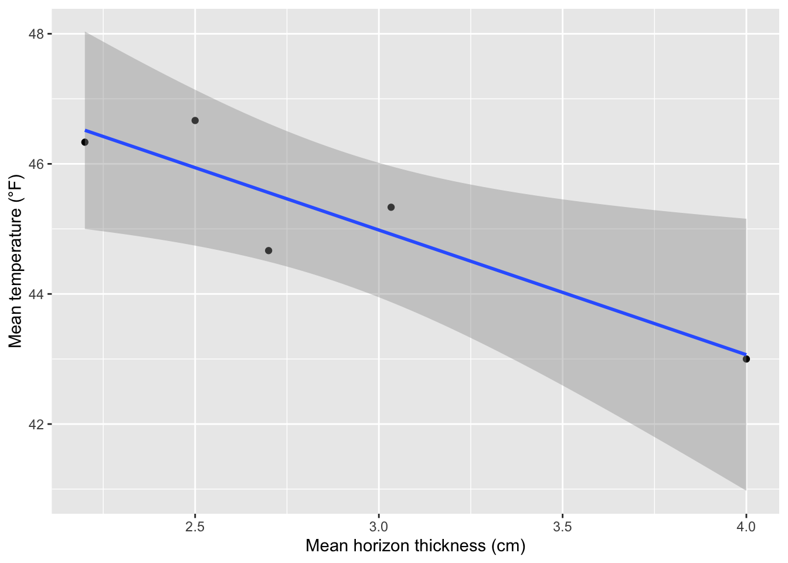
temp_thick_mod = lm(mean_temperature ~ mean_thickness, data = summary_env)
summary(temp_thick_mod)##
## Call:
## lm(formula = mean_temperature ~ mean_thickness, data = summary_env)
##
## Residuals:
## 1 2 3 4 5
## -0.18332 0.72525 0.41456 -0.89126 -0.06523
##
## Coefficients:
## Estimate Std. Error t value Pr(>|t|)
## (Intercept) 50.7351 1.5229 33.316 5.94e-05 ***
## mean_thickness -1.9175 0.5158 -3.717 0.0339 *
## ---
## Signif. codes: 0 '***' 0.001 '**' 0.01 '*' 0.05 '.' 0.1 ' ' 1
##
## Residual standard error: 0.7142 on 3 degrees of freedom
## Multiple R-squared: 0.8216, Adjusted R-squared: 0.7622
## F-statistic: 13.82 on 1 and 3 DF, p-value: 0.03387horizon thickness ~ slope angle
ggplot(summary_env) +
geom_point(aes(x = mean_slope_angle, y = mean_thickness)) +
ylab("Mean horizon thickness (cm)") +
xlab("Mean slope angle (°)") +
geom_smooth(aes(x = mean_slope_angle, y = mean_thickness), method = "lm")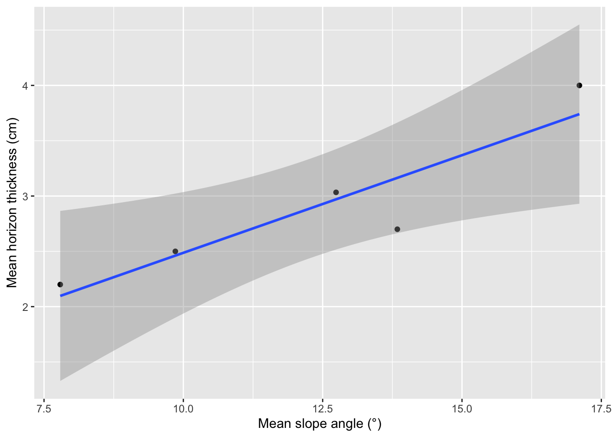
thickness_slope_mod = lm(mean_thickness ~ mean_slope_angle, data = summary_env)
summary(thickness_slope_mod)##
## Call:
## lm(formula = mean_thickness ~ mean_slope_angle, data = summary_env)
##
## Residuals:
## 1 2 3 4 5
## 0.10310 0.03869 0.06312 -0.46425 0.25934
##
## Coefficients:
## Estimate Std. Error t value Pr(>|t|)
## (Intercept) 0.72216 0.55535 1.30 0.2844
## mean_slope_angle 0.17646 0.04379 4.03 0.0275 *
## ---
## Signif. codes: 0 '***' 0.001 '**' 0.01 '*' 0.05 '.' 0.1 ' ' 1
##
## Residual standard error: 0.3156 on 3 degrees of freedom
## Multiple R-squared: 0.8441, Adjusted R-squared: 0.7921
## F-statistic: 16.24 on 1 and 3 DF, p-value: 0.02747soil moisture ~ slope angle
ggplot(summary_env) +
geom_point(aes(x = mean_slope_angle, y = mean_moisture)) +
ylab("Mean soil moisture (%)") +
xlab("Mean slope angle (°)") 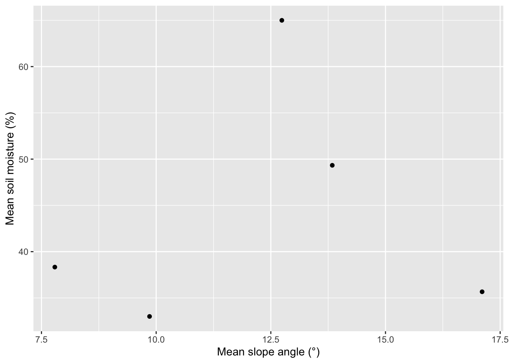
moist_slope_mod = lm(mean_moisture ~ mean_slope_angle, data = summary_env)
summary(moist_slope_mod)##
## Call:
## lm(formula = mean_moisture ~ mean_slope_angle, data = summary_env)
##
## Residuals:
## 1 2 3 4 5
## -3.360 -9.881 20.461 4.162 -11.383
##
## Coefficients:
## Estimate Std. Error t value Pr(>|t|)
## (Intercept) 37.213 26.381 1.411 0.253
## mean_slope_angle 0.575 2.080 0.276 0.800
##
## Residual standard error: 14.99 on 3 degrees of freedom
## Multiple R-squared: 0.02484, Adjusted R-squared: -0.3002
## F-statistic: 0.07642 on 1 and 3 DF, p-value: 0.80021.4 Table of model summaries (Q4)
| Relationship (y ~ x) | slope | y-intercept | \(R^2\) | P value |
|---|---|---|---|---|
| soil temperature ~ soil moisture | -0.006 | 45.473 | 0.003 | 0.930 |
| soil moisture ~ horizon thickness | 0.496 | 42.834 | 0.001 | 0.967 |
| soil temperature ~ horizon thickness | -1.917 | 50.735 | 0.822 | 0.034 |
| horizon thickness ~ slope angle | 0.176 | 0.722 | 0.844 | 0.027 |
| soil moisture ~ slope angle | 0.575 | 37.213 | 0.025 | 0.800 |
1.5 Tree community composition
In order to better visualize individual species, I added a line specifying a new color palette: ... + scale_fill_manual(values = as.vector(pals::polychrome(35))).
Species relative frequency
# Data processing
rel_freq = forest %>%
# Select columns we want to plot
select(Site, `Relative Frequency`, `Tree ID`) %>%
# Get distinct values of each row
distinct()
# Plot the data
ggplot(data = rel_freq) +
geom_bar(aes(x = Site, y = `Relative Frequency`,
fill = `Tree ID`), stat = "identity") +
#add color palette
scale_fill_manual(values = as.vector(pals::polychrome(35)))+
theme_bw()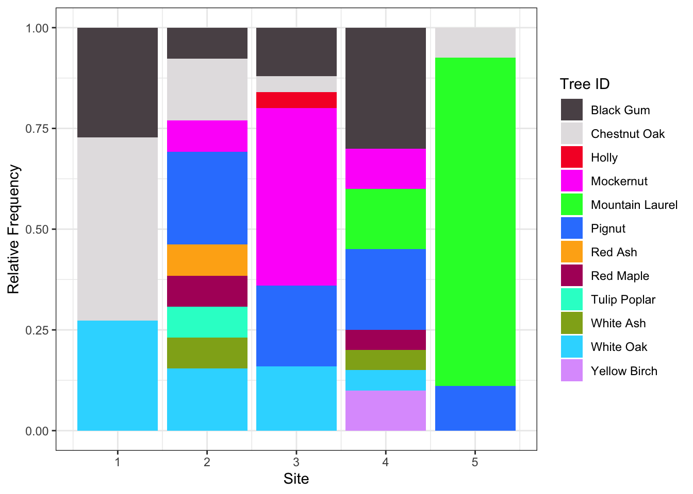
Species relative dominance
# Data processing
rel_dom = forest %>%
# Select columns we want to plot
select(Site, `Relative Dominance`, `Tree ID`) %>%
# Get distinct values of each row
distinct()
# Plot the data
ggplot(data = rel_dom) +
geom_bar(aes(x = Site, y = `Relative Dominance`,
fill = `Tree ID`), stat = "identity") +
#add color palette
scale_fill_manual(values = as.vector(pals::polychrome(35)))+
theme_bw()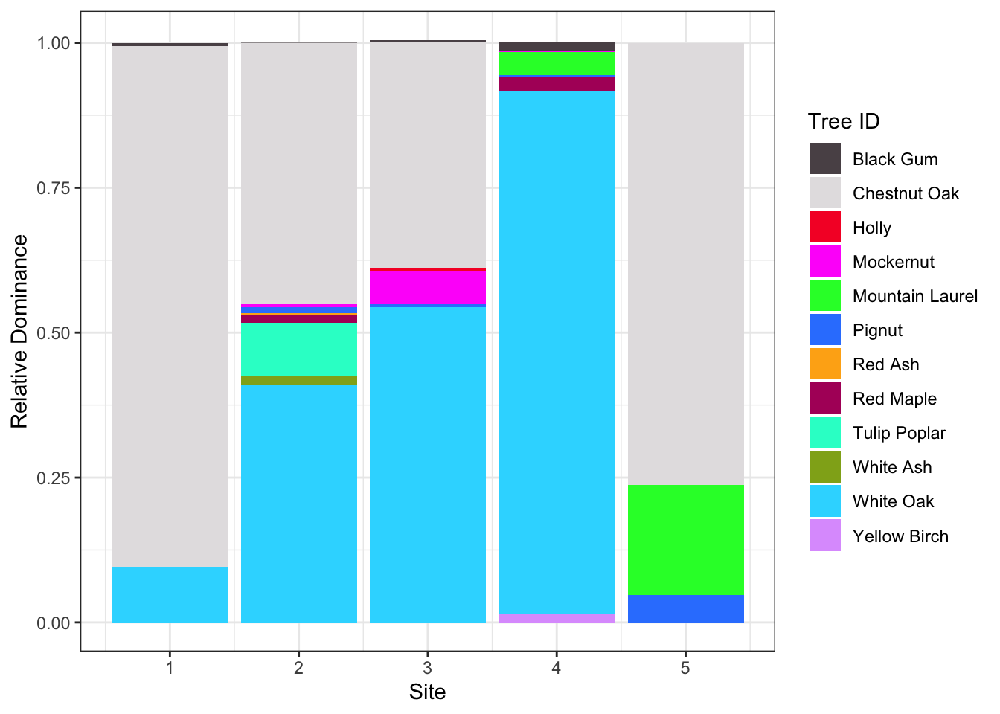
Species importance
# Data processing
importance = forest %>%
# Select columns we want to plot
select(Site, Importance, `Tree ID`) %>%
# Get distinct values of each row
distinct()
# Plot the data
ggplot(data = importance) +
geom_bar(aes(x = Site, y = Importance,
fill = `Tree ID`),
position = "dodge", stat = "identity") +
#add color palette
scale_fill_manual(values = as.vector(pals::polychrome(35))) +
theme_bw()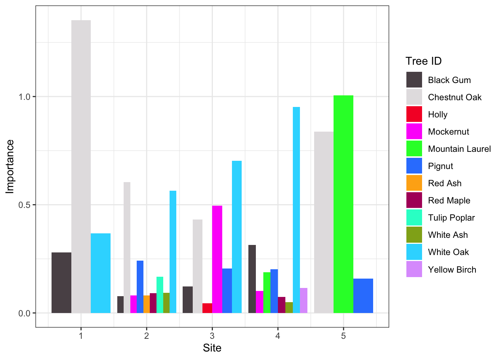